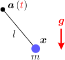
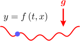

前章の議論を、時間変化する拘束条件の場合に拡張したい

動く振り子の運動
おもりの運動
この章では、以下の2つの節に分けて、
7.1初期値に対する拘束条件と拘束力
この節では、初期値
動く壁との衝突（第4章）では、弾性衝突直後の速度を得るためにかなり議論を要した。一方、今考えている拘束された運動では、拘束条件が時間変化するかどうかによって議論はほとんど変わらない。これは、衝突の場合は、拘束面に垂直な方向の速度を考える必要があるのに対して、拘束された運動では、垂直方向の速度は拘束条件から自動的に決まるためである。
初期値
初期値
【7.1-注1】合成関数の微分公式
任意の
導出
まず、
この導出は、4.2節で壁の速度を求めた時のものと同じである。
拘束力
拘束力
しかし、これ1つだけでは
式(
【7.1-注2】時間変化する拘束条件による拘束力：式(
時間に依存する拘束条件
導出
拘束条件(
7.2物体の運動
以上で、必要な議論がそろった。この節では、拘束条件
物体の運動
拘束条件
【例題】動く振り子：運動方程式(
冒頭で述べた通り、動く振り子（右図）の拘束条件は
初期値

例として、振り子の中心を
【例題】波打つ床

もう1つの例として、2次元平面上のグラフ
初期値

関数
7.3（計算手法の補足）
拘束力は、式(
微分を数値的に計算する方法
数値計算を行う際、拘束条件
微分を数値的に計算するには、第1章の【1.2-注1】で述べた、速度や加速度を測定する時の方法が使える。例えば、任意の関数
2階微分、例えば